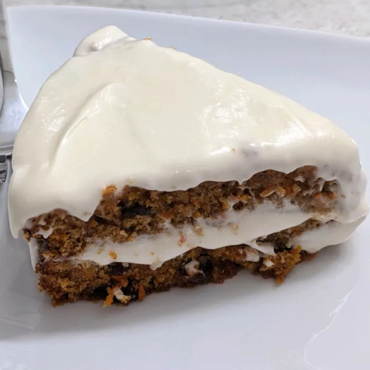

Carrot Cake

This recipe makes a fabulous and moist carrot cake.
Ingredients
- 2 cups white sugar
- 2 cups all-purpose flour
- 1 teaspoon salt
- 1 ½ cups vegetable oil
- 4 eggs
- 3 cups grated carrots
- 1 cup chopped walnuts
- 1 (3 ounce) package cream cheese
- ¼ cup heavy whipping cream
- 1 teaspoon vanilla extract
- 2 ½ cups sifted confectioners' sugar
Directions
-
Preheat oven to 350 degrees F (175 degrees C). Grease one 9 or 10 inch
tube pan.
-
Combine the sugar, flour, salt, cinnamon, soda, oil. With an electric
mixer beat in the eggs one at a time. Stir in the carrots and the
walnuts. Pour the batter into the prepared baking pan.
-
Bake at 350 degrees F (175 degrees C) for 1 hour 20 minutes. Note: this
cake can be made in two 9 inch layer cake pans just change the baking
time to 40 minutes.
-
To Make Frosting: With an electric mixer blend the cream cheese and
cream. Add the vanilla and confectioners' sugar. Frosting can be spread
and a still warm cake.